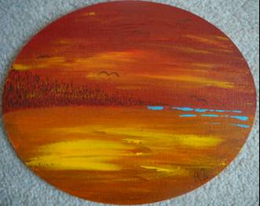

Oberflächlich betrachtet könnte man mich so beschreiben:
kreativ, bunt, crazy, leicht chaotisch, ein Sonnenschein, optimistisch, lebenslustig, selten ruhig = kommunikativ ;-)
Wer mich näher kennt, würde u.a. aber auch folgendes über mich sagen:
nachdenklich, sensibel, verletzlich, reflektiert, selten, aber doch auch einmal zornig
Nicht jeder kennt diese - unbestritten - sehr unterschiedlichen Seiten von mir, weil ich sie nicht immer bzw. durchaus selektiv zeige. Diese Webpages brechen insofern damit, da sie ganz mich selbst bzw. das Ergebnis davon zeigen. Denn künstlerisches Gestalten ist nicht nur eine Ausdrucksmöglichkeit seiner Kreativität sondern auch ein Mittel, sich besser kennen zu lernen und neu zu erfahren. Ob man will, oder nicht, das Unterbewusstsein gestaltet immer mit. Man(n)/Frau gibt daher automatisch auch Persönliches preis.


Abendstimmung
2012 - 20x25 oval (Acryl & permanent Universalstift auf Malmappe)
2012 - 20x25 oval (Acryl & permanent Universalstift auf Malmappe)
"Wer nach außen schaut, träumt. Wer nach innen sieht, erwacht."
"Nur wer sich ändert, bleibt sich treu."